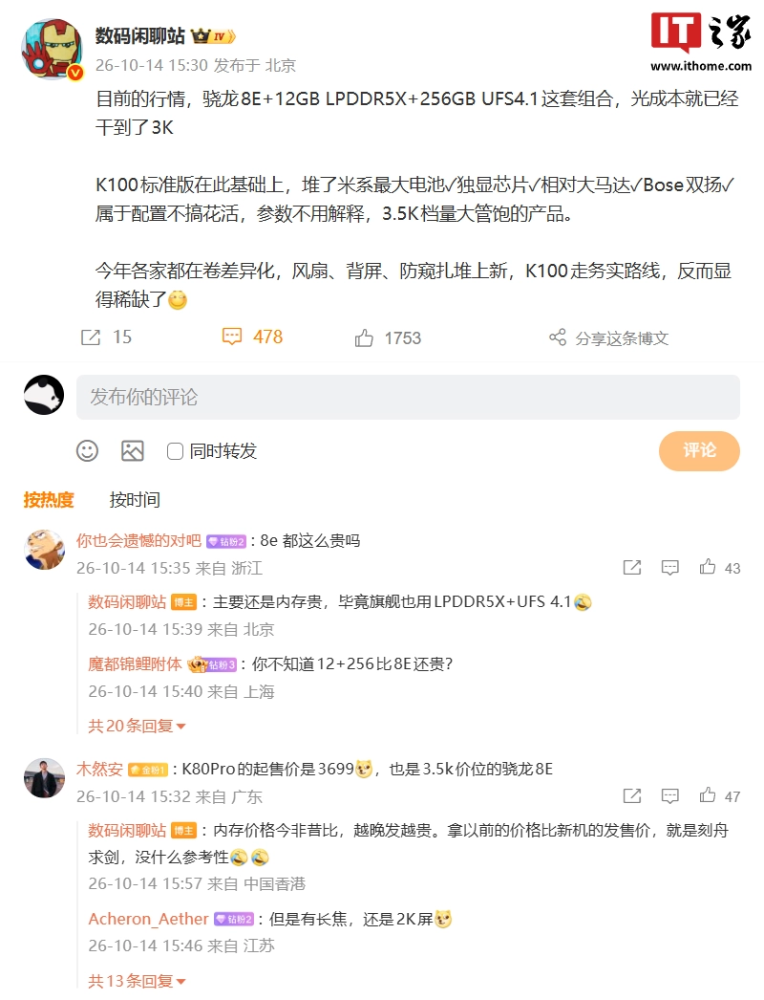
THE TECH EDIT
기술의 변화, 매일 한눈에.
카메라 · 스마트폰 · AI, 해외 테크 소식을 모아 전합니다.
최근 발행2026-10-15
새로 들어온 소식
LATEST STORIES최신 뉴스
전체 3,702개 기사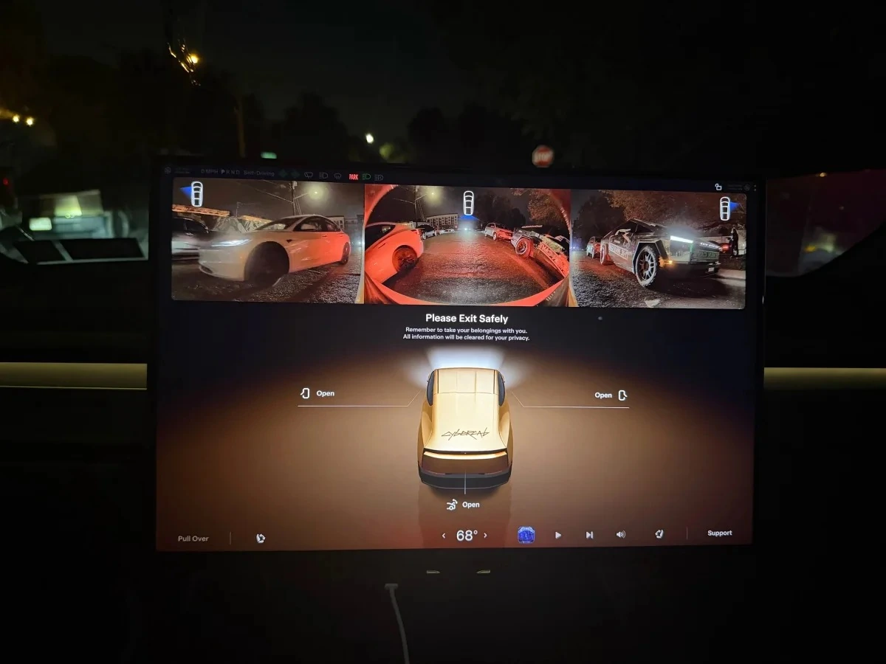
후방 미러가 없는 테슬라 사이버캡, 불안한가요? 미래에는 승객이 주행 중 언제든지 측면 및 후방 카메라 화면을 확인할 수 있습니다.
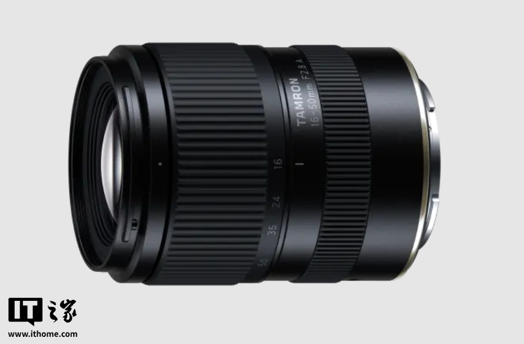
탐론 APS-C 포맷 16-50mm F2.8 A 렌즈 출시: 305g 무게, "항상 휴대하기 좋은 렌즈" 표방
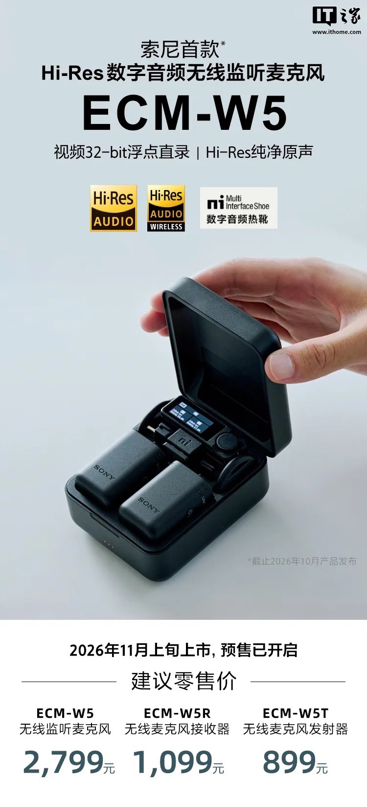
Sony 최초의 32비트 플로팅 Hi-Res 무선 모니터링 마이크 ECM-W5 출시, 2,799위안
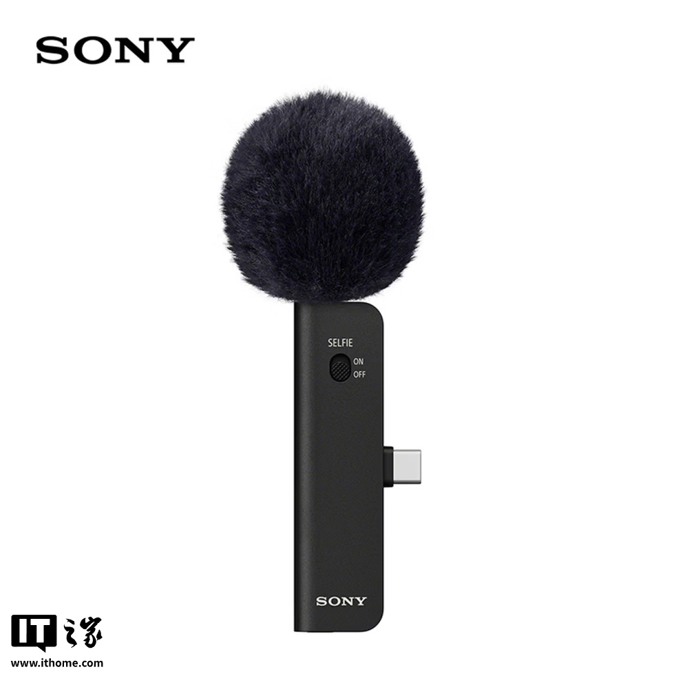
Sony ECM-AX10 스마트폰 공간 오디오 마이크 출시, 1499위안
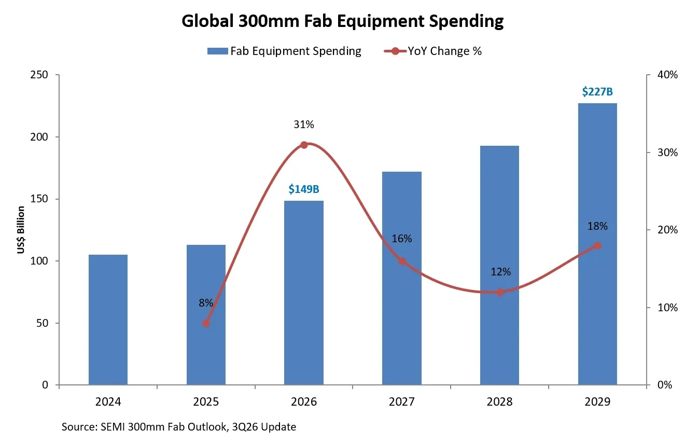
SEMI 예측: 전 세계 300mm 웨이퍼 팹 장비 투자 2029년 2,270억 달러 달성 전망
SEMI 예측: 반도체 시장 규모 2035년 2~3조 달러 달성 전망
Samsung 반도체, UFS 부품 번호 대조표 공개: V8 Savona 및 V8 Serra 모두 UFS 4.1에 포함
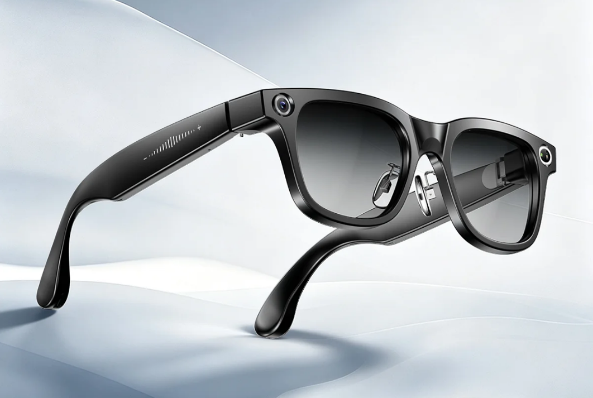
Rogbid, 20MP 소니 카메라, 4K 녹화, 9시간 배터리 수명을 갖춘 VisionMax 스마트 안경 출시
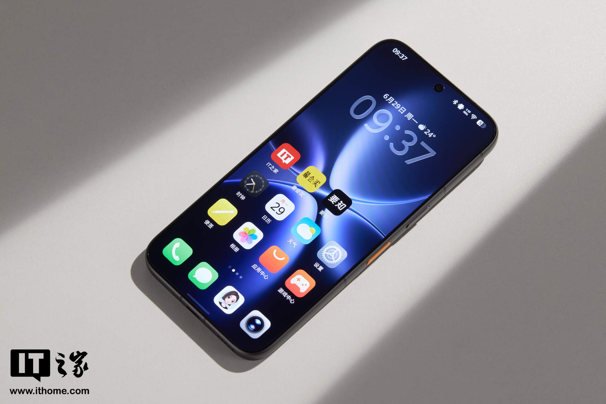
신규 및 기존 사용자 모두 혜택: Nubia NaviX Ultra 스마트폰 추가 구매 혜택, 두바오 스탠다드 버전 6개월 멤버십 추가 증정
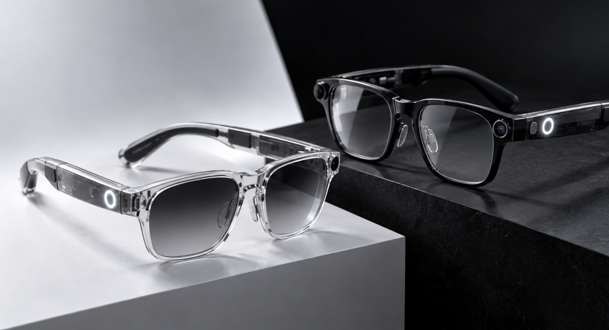
Nothing 스마트 안경 유출, 카메라 및 AI 기능 갖춘 두 가지 모델 공개
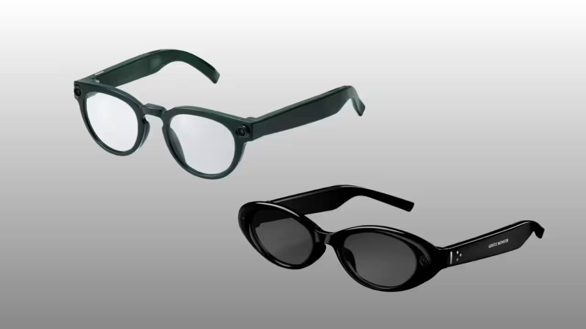
Nothing, 오디오 및 카메라 버전 스마트 안경 2종 출시 예정, 카메라 버전은 ChatGPT 지원
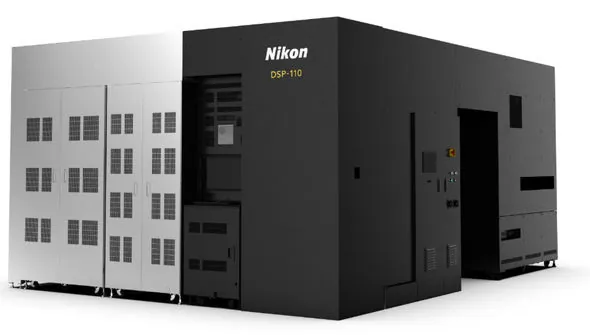
Nikon, 첨단 패키징용 디지털 노광 장비 DSP-110 출시: 1.5μm 해상도, 내년 출시 예정
(업데이트: 환불 가능 상품 재등록) 징둥 7,999위안 Apple iPhone Duo 얼리버드 혜택 패키지 판매 중단, 일부 소비자 환불 불가 불만 제기
징둥에서 7,999위안 Apple iPhone Duo 얼리버드 혜택 패키지 재출시, 이번에는 환불 가능
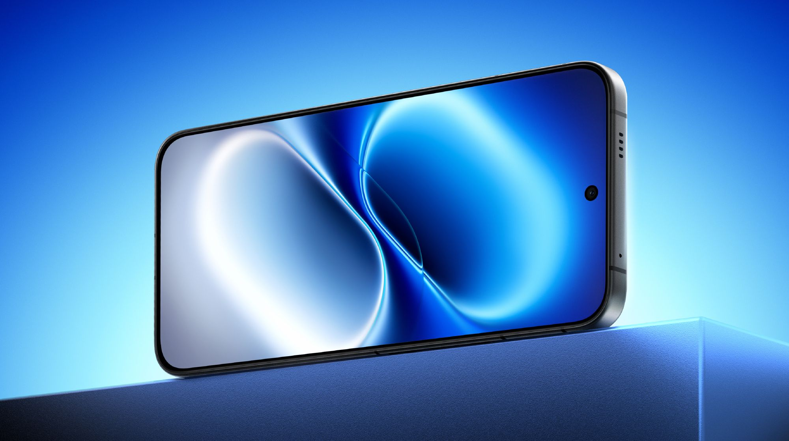
iQOO Neo 12, Visionox의 새로운 pTSF OLED 소재를 탑재한 첫 스마트폰이 될 것
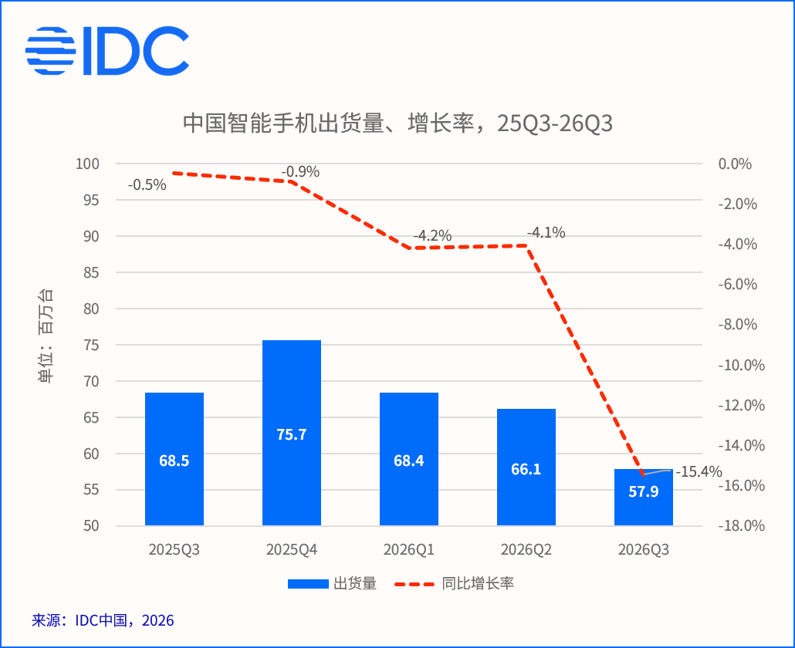
IDC, 2026년 3분기 중국 스마트폰 출하량 15.4% 감소, Huawei는 역성장에도 17.3% 증가
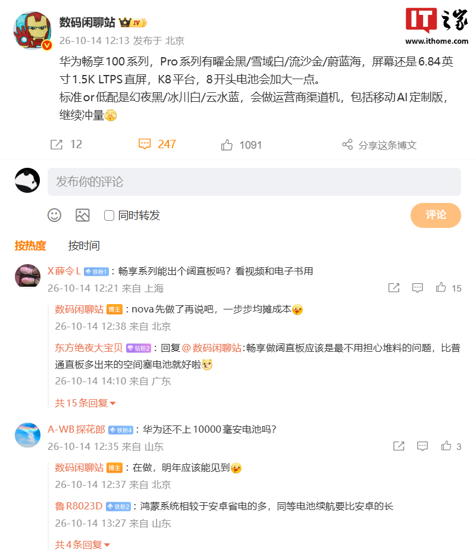
Huawei Enjoy 100 시리즈 스마트폰 사전 유출: Pro 모델은 Kirin 8 시리즈 플랫폼 + 6.84인치 1.5K LTPS 바 타입 디스플레이 유지 예상
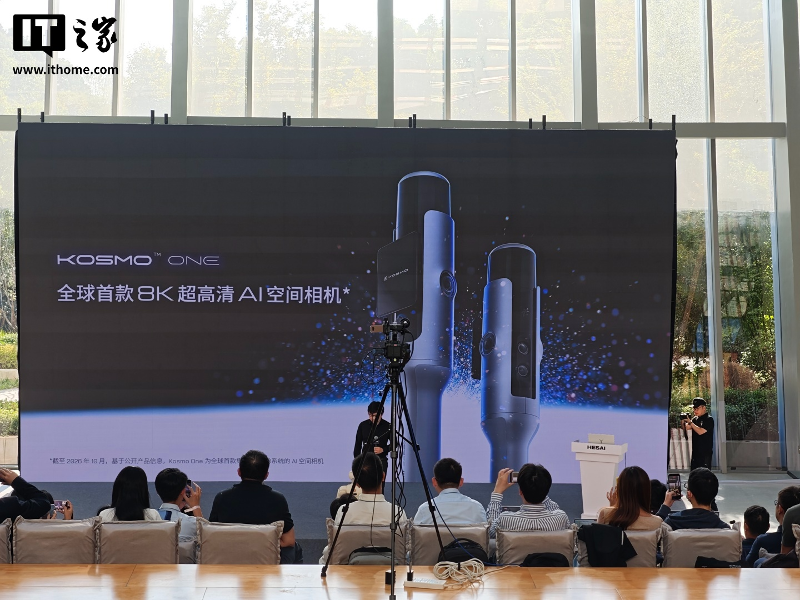
세계 최초 8K 초고화질 AI 공간 카메라: Hesai Kosmo One 출시, 모델링을 사진 촬영처럼 간단하게
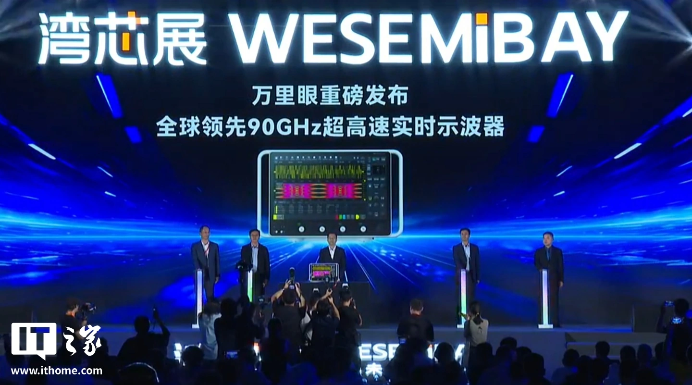
2026 광둥-홍콩-마카오 대만구 반도체 전시회: 신카이라이 반도체 장비 양산, Wanliyan 90GHz 초고속 실시간 오실로스코프 공급 부족
글로벌파운드리, 뉴욕에 두 개의 팹 건설 선정, 미국 상무부와 9억 5,500만 달러 자금 지원 조정 및 약 4% 추가 지분 할당 합의
Fujifilm, 미국에 1,800만 달러 투자해 다양한 CMP 슬러리 생산 능력 구축
검색 결과가 없습니다
다른 검색어를 입력하거나 필터를 초기화해 보세요.